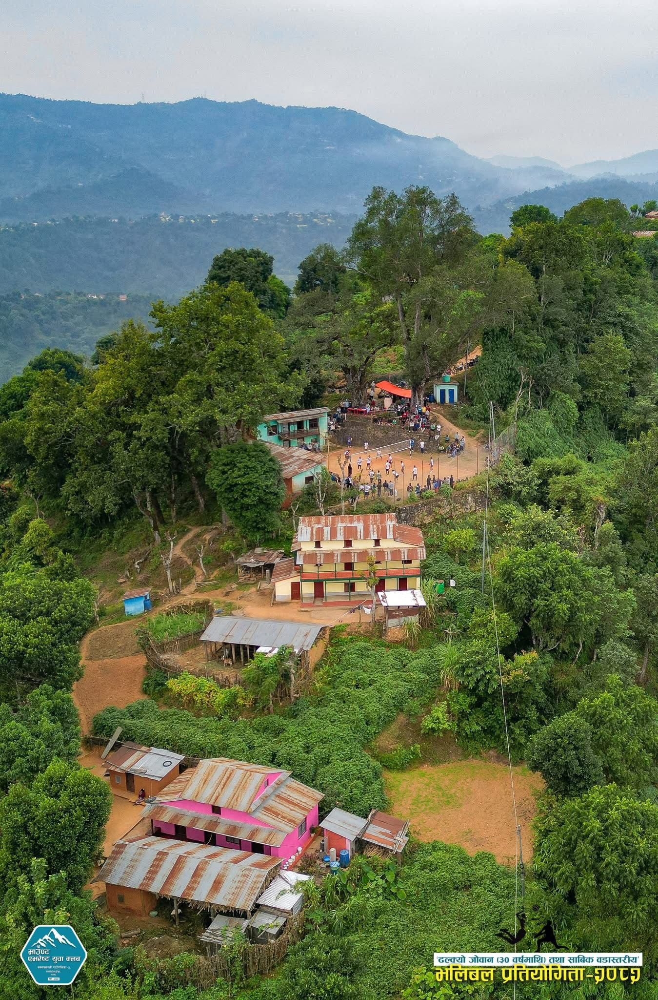

Tall Koldanda
Mount Everest Youth Club
Mount Everest Youth Club
A youth-led community club working for unity, sports, culture, social service, and development in Tall Koldanda.
Shree Mountain Everest Youth Club is a community-based youth club located in Bagnaskali Rural Municipality–5, Tallokoldanda, Palpa. The club was established in 2055 B.S. with the aim of bringing young people together for social service, sports, cultural activities, and community development.
The club encourages teamwork, discipline, leadership, and unity among local youth. It also works to support positive change in the community by organizing different programs and activities. The mountain logo represents strength, courage, ambition, and the spirit of reaching higher goals, just like Mount Everest..
Shree Mountain Everest Youth Club plays an important role in motivating young people to contribute to society and preserve local culture while building a better future for the community. Tallokoldanda village is known for its beautiful natural views. From the village, people can see amazing views of the Annapurna and Machhapuchhre mountains. In the morning, the sunrise on the mountains looks very lovely. The clean air, green hills, and white mountains create a beautiful natural scene. The village also has a wonderful view of the Kali Gandaki River, which flows through the hills and adds more beauty to the area. From Tallokoldanda, people can also enjoy the view of Syangja and nearby places. The mountain view, river view, green hills, fresh air, and peaceful environment make Tallokoldanda a special village in Palpa. Because of its natural beauty, Tallokoldanda is a nice place for nature lovers and visitors. It gives pride to the local people and shows the real beauty of village life.
Mount Everest Youth Club organizes different programs to support youth, community, culture, and development.
We support village development, cleaning campaigns, social work, awareness programs, and local improvement activities.
We organize volleyball and other sports programs to encourage health, teamwork, discipline, and youth participation.
We help preserve local culture, festivals, traditional programs, music, dance, and village identity.
Our club is guided by unity, discipline, respect, and love for the community.
To unite young people, support community development, preserve local culture, and promote Tall Koldanda village to the wider world.
To make Tall Koldanda a clean, educated, active, peaceful, and well-connected village.
Unity, respect, teamwork, honesty, discipline, social responsibility, and love for our village.
These are the main objectives of Mount Everest Youth Club.
To support local development activities and encourage young people to participate in positive community work.
To encourage education, awareness, skill development, and learning opportunities for children and youth.
To keep the village clean, protect natural resources, and promote environmental awareness.
Youth are the future of our village and the strength of our community.
Youth are the power and future of our village. If we work together with unity, honesty, and hard work, we can make our village better and more beautiful.
We can help in cleaning the village, protecting nature, supporting education, organizing sports and cultural programs, and helping people in need. Small efforts from every young person can bring big changes to our community. Let us love our village, respect our culture, and work together for development. Together, we can develop our village and build a bright future.

You can support Mount Everest Youth Club by helping with sports materials, education resources, cultural programs, and community development activities.
Support volleyballs, nets, jerseys, trophies, medals, and sports event materials.
Support books, stationery, digital learning tools, and educational programs.
Support cleaning campaigns, awareness programs, cultural events, and social work.